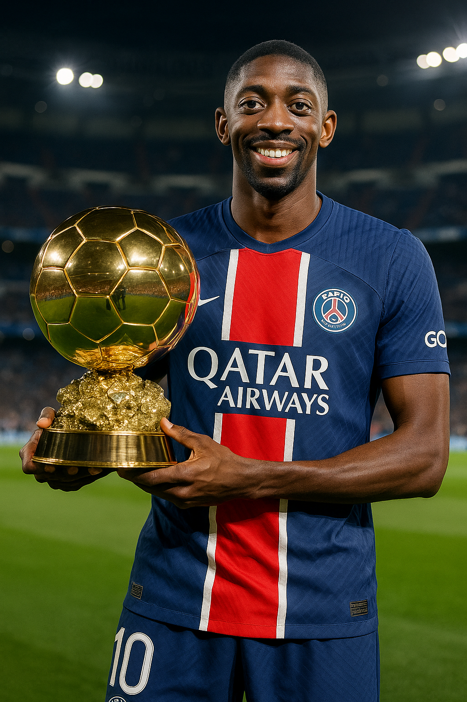

Dembélé(Ousmane Dembélé):
- Paris Saint-Germain játékosa
- Francia nemzetiségű
- 28 éves
- Mezszám: 10
- Jobbszélső támadó de néha középcsatárként is játszik
- 0,73-as gólátlag meccsenként
- 0,26-as gólpassz átlag meccsenként
- A transfermarkt 75 millió euróra értékeli de ez valószínüleg fentebb fog menni a jelenlegi formáját tekintve
- Dembélé szinte teljesen újjá született ebben a szezonban azt követően, hogy az előző néhány szezonja nem sikerült valami jól mivel sok sérüléssel is bajlódott és a formája se volt túl jó
ezek közül csak 1 gólt szerzett tizenegyesből
- Az átlagos értékelése kb 7.7-es
- passzpontossága 83%-os
- 49 kaput eltaláló lövése volt a Francia bajnokságba
- Sok gólja között van pl. az arsenal elleni amivel megnyerte csapatának az odavágót vagy amikor a liverpool ellen megszerezte a győzelmet a góljával az 1. mérkőzésen
- Dembélé a PSG egyik ha nem a legnagyobb sztárja
Megnyerte már:
- -Francia bajnokság
- -Francia bajnokság
Még megnyerheti:
- -Bajnokok ligáját
- 2025-ben majdnem minden mérkőzésen betalált, de a szezon első felében nem volt annyira jó mint most ezért sem kerül előrébb a listában
